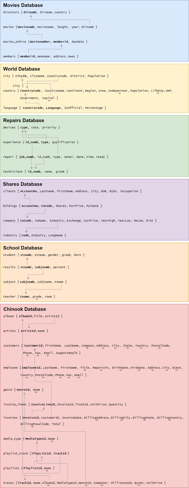

Coding — Unit 2#
SQL#
SQL (Structured Query Language) is a standard programming language specifically designed for managing and manipulating relational databases. It allows users to create, read, update, and delete data within a database, as well as to define and manage database structures. SQL is used to perform tasks such as querying data to retrieve specific information, inserting new data records, updating existing data, and deleting unwanted data. Additionally, SQL enables the creation of database schemas, the definition of relationships between different data tables, and the implementation of security measures to control access to the data. Its powerful and versatile nature makes SQL an essential tool for database management and analysis.
According to Stack Overflow’s 2023 Developer Survey [], SQL-based databases dominate the database management system (DBMS) market. It is estimated that approximately 90% or more of databases use SQL.
Database Resources#
For the following SQL section we will be using the following databases:
Below is the Relational Schemas for these databases

Exercise solutions can be found in the solutions section.
SELECT Statement#
The SQL SELECT statement is used to retrieve specific data from tables within a relational database. The data is return in the form of a table.
SELECT Tutorials#
Complete:
W3schools Tutorial on the
SELECTstatementW3schools Tutorial on the
SELECT DISTINCTstatement
SELECT Exercises#
Using the Movies database:
Display the name of all the directors
Display the name of all the members
Display the details in the movie table
Display all the years of release with no duplications
Display the number of all movies on hire and when they are due back
WHERE clause#
The SQL WHERE clause is used to filter records in a database query to include only those that meet specified conditions.
WHERE Tutorials#
Complete
W3schools Tutorial on the
WHEREclauseW3schools Tutorial on the
AND,ORandNOToperatorsW3schools Tutorial on the
LIKEoperatorW3schools Tutorial on
NULLvalues
WHERE Exercises#
Using the Movies database
Display the name of all the US directors
Display the name of the all non-US directors
Display the name of all the members who owe money
Display all the movies that have ‘the’ in their title
Display all the movies that start with Z
Using the Repairs database
List the owners whose repair is ready to collect
List the owners whose iMac is still being repaired
Using the World database
Which countries have not achieved independence but still have a capital
Which countries are missing information?
List countries that are either constitutional monarchies or republics
Filters and Aggregators#
SQL filter clauses are used to restrict the number of rows returned by a query based on specified conditions, enabling more precise data retrieval and manipulation. While SQL aggregators are functions used to perform calculations on multiple rows of a table’s column and return a single value.
Filters and Aggregators Tutorials#
Complete:
W3schools Tutorial on the
TOPandLIMITclausesW3schools Tutorial on the
MIN()andMAX()functionsW3schools Tutorial on the
COUNT(),AVG()andSUM()Functions
Filters and Aggregators exercises#
Using the Movies database
How many directors are there from Australia?
How many directors have the name John?
What is the longest movie?
If I was to watch all the movies, back-to-back, how many minutes will I need (no pausing for toilet stops)
Using the Repairs database
What is the average repair rate?
How many repairs are waiting to be picked up?
Using the Shares database
How many companies are there in the high risk category?
Which company has the biggest difference between their highest and lowest price?
What is the cheapest, medium or low risk share on the New York Stock Exchange?
List all shares that are currently within 10% of their highest price?
ORDER BY#
The SQL ORDER BY keyword is used to sort the result set of a query by one or more columns, either in ascending (ASC) or descending (DESC) order.
ORDER BY Tutorials#
Complete:
W3schools Tutorial on the
ORDER BYKeyword
ORDER BY Exercises#
Using the Movies database
List all the movies names in alphabetical order
What is the 5 oldest movie in stock?
Display the movies in chronological order, and then alphabetical order within each year.
Using the School Database
List the name of the grade 6 students in alphabetical order
What is the top three results in percentage
List all the boys’ birthdays in order, then all the girls’ birthdays in order, with their names
GROUP BY and HAVING#
The SQL GROUP BY statement is used to group rows that have the same values in specified columns into summary rows, often in conjunction with aggregate functions to perform calculations on each group. While the SQL HAVING statement is used to filter groups of rows created by the GROUP BY clause based on specified conditions, typically involving aggregate functions.
GROUP BY and HAVING Tutorials#
Complete:
W3schools Tutorial on the
GROUP BYStatementW3schools Tutorial on the
HAVINGClause
GROUP BY and HAVING Exercises#
Using the Movies database
How many directors are there from each country?
How many movies does each member number have on hire?
How many movies are stocked from each year?
Using the School database
What is the average result for each subject(code)?
How many boys and girls in each grade?
Using the Shares database
How many companies are there in each risk category?
What is the cheapest, medium risk and cheapest low risk share on the New York Stock Exchange?
Using the Chinook database
How many customers are there from each country?
How many customers in each city?
How much were the sales for each country?
Subqueries#
SQL sub-queries are queries embedded within another SQL query to provide results that are used by the outer query, enabling more complex and flexible data retrieval and manipulation. Subqueries are possible since every query returns a table. Effectively, you run one query which returns a table, then you run another query on the data in the returned table.
Subqueries Tutorials#
Complete:
W3schools Tutorial on the
INOperator
Subqueries Exercises#
Using the Schools database
What are the percentage results for students in grade 7
What subject is taught by the teacher in room A2?
In which subjects did students score over 90%?
List the names of the students in grades 4 or 5 who scored over 50% for language.
List the names of students who do science.
Repairs database
Who owns devices being repaired by Ted Carrol?
What are the names of the technicians who are still not expert (N) at repairing Macs?
What rate will Byrne be charged for repairs?
List the owners whose devices have a high (H) priority for repair.
What level of qualification has the technician who is doing James’ repair job?
JOIN#
SQL join clauses are used to combine rows from two or more tables based on a related column between them, enabling the retrieval of data that spans multiple tables.
JOIN Tutorials#
Complete
W3schools Tutorial on Joins
W3schools Tutorial on the
INNER JOINKeyword
JOIN Exercises#
Using the Schools database
What is the average percentage of the students for each teacher
List all the students taught by Mr Simms
Using the Chinook database
List all albums, including artist name
List the name of all the tacks in the metal genre
List all the details of all Def Leppard tracks.
Record Management#
SQL record management keywords, such as INSERT, UPDATE, and DELETE, are used to add new records, modify existing records, remove records in a database table respectively.
Record Management Tutorials#
Complete:
W3schools Tutorial on the
INSERT INTOStatementW3schools Tutorial on the
UPDATEStatementW3schools Tutorial on the
DELETEStatement
Record Management Exercises#
Using the Movies database
Add a new director record for Australian director Rachael Perkins
Add a new member record. Name: Melissa Small, Address: 38 Loggers Ln
Add movies on hire for Aliens being hired to Reis,E return date is in two weeks.
Update Fitzgerald,F’s address to 13 Elms St
Lennon,S has paid her fees, adjust the database appropriately
The store is doing a cull and getting rid of all movies before 1970, adjust the database appropriately.
Converting datastore to a database#
One of the advantages of using MVC Architecture is ease of refactoring. You can change any of the three modules, as long as calling the methods that interconnect the modules remain the same. For example, if you want to change the datastore module so it uses a database, you can change that one module and leave the main and UI module alone.
The videos below build on our hangman game from Unit 1 by changing the datastore to an SQLite database. The use of a database allows for other features like recording results and having multiple user, so the other two modules are adjusted to include these features. These video also provide an example of a stacked widget.